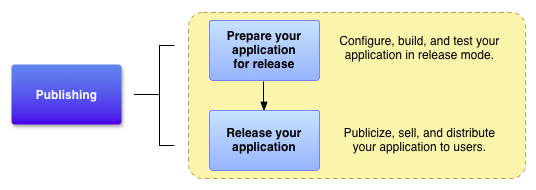

Огляд
- Пізнайте, які ресурси вам знадобляться для випуску вашого застосування.
- Знайдіть, як сконфігурувати та побудувати ваше застосування для випуску.
- Ознайомтесь з крашими практиками для випуску вашого застосування.
В цьому документі
- Вступ
- Збирання матеріалів та ресурсів
- Конфігурація вашого застосування
- Побудова вашого застосування
- Підготування
зовнішніх серверівта ресурсів
- Тестування вашого застосування для випуску
Також дивіться
Перед тим, як ви розповсюдите ваше Android застосування серед користувачів, вам треба підготувати його для випуску. Процесс підготовки є необхідним завданням розробки для всіх Android застосувань, та є першим кроком в процесі публікації (дивіться мал 1).
Коли ви готуєте ваше застосування для випуску, ви конфігуруєте,
будуєте та тестуєте версію випуску вашого застосування.
Конфігурація є прямолінійною, включаючи базову очистку коду та
модифікацію коду, що повинно допомогти оптимізувати ваше
застосування. Процесс побудови подібний до процесу
побудови відлаштування, та може бути зроблене з
використанням інструментів JDK та Android SDK. Завдання
тестування прислуговуютьсяв якості останньої перевірки, щоб
впевнитись, що ваше застосування робить як очікувалось в умовах
реального світу. Коли ви скінчите підготовку вашого застосування
до випуску, ви отримаєте підписаний файл.apk, що ви
можете поширювати напряму до користувачів, або розповсюджувати
через ринок застосувань, такий, як Google Play.
Цей документ підсумовую головні завдання, що вам треба для підготовки вашого застосування до випуску. Завдання, що описані в цьому документі, стосуються всіх застосувань Android, безвідностно до того, як вони випускаються та росповсюджуються до користувачів. Якщо ви випускаєте ваше застосування через Google Play, вам потрубно також прочитати Контрольний список для публікації на Google Play, щоб впевнитись, що готові до випуску застосування задовольняють всім вимогам Google Play.
Зауваження: В якості кращої практики ваше застосування повинно зодовільняти всім вашим критеріям випуску для функціональності, продуктивності та стабільності, перед тим, як ви виконаєте завдання, описані в цьому документі.
Мал 1. Підготовка до випуску є необхідним завданням розробки, та є першим кроком в процессі публікації.
Вступ
Щоб випустит ваше застосування до користувачів, вам потрібно
створити готовий до випуску пакунок, що користувачі можуть
встановити та виконати на своїх оздоблених Android пристроях.
Готовий до випуску пакунок містить ті ж компоненти, що і
відлаштований .apk файл —
скомпільований первинний код, ресурси, файл маніфесту, і таке
інше — та він будується за допомогою тих же інструментів
побудови. Однак, на відміну від відлаштованого .apkфайлу,
готовий до випуску .apkфайл підписаний вашим
власним сертифікатом та оптимізований для інструменту
zipalign.
Figure 2. You perform five main tasks to prepare your application for release.
Завдання підпису та оптимізації зазвичай безпролемні, якщо ви будуєте ваше застосування за допомогою Android Studio. Наприклад, ви можете використати Android Studio разом з файлами побудови Gradle для компіляції, підпису та оптимізації вашого застосування за один прохід. Ви також можете сконфігурувати файли побудови Gradle щоб зробити те ж саме, коли ви будуєте з командного рядка. Для додаткових деталей щодо використання файлів побудови Gradle дивіться підручник з Системи побудови.
Щоб підготувати ваше застосування для випуску, ви типово виконуєте п’ять головних завдань (дивіться мал 2). Кожне головне завдання може включати одне або більше менших завдань, в залежності від того, як ви випускаєте ваше застосування. Наприклад, якщо ви випускаєте ваше застосування через Google Play, ви можете побажати додати спеціальні правила фільтрації до вашого маніфесту під час конфігурації вашого застосування для випуску. Подібним чином, щоб задовільнити правилам публікації на Google Play, ви можете підготувати знімки екрану та створити рекламний текст під час збору матеріалів для випуску.
Ви звичано виконуєте дії, змальовані на мал 2 після того, як всебічно відлаштували та протестували ваше застосування. Android SDK містить декілька інструментів, що допоможуть вам протестувати та відлаштувати ваші застосування для Android. Для додаткової інформації дивіться розділи Відлаштування та Тестування в Dev Guide.
Збирання матеріалів та ресурсів
Щоб розпочати підготовку застосування до випуску, вам треба зібрати декілька допоміжних елементів. Як мінімум, це включає криптографічні ключі для підпису вашого застосування та іконку застосування. Ви можете також включити ліцензійну угоду користувача. .
Криптографічні ключі
Система Android потребує, щоб кожне встановлене застосування було підписано цифровим сертифікатом, що належить розробнику застосування (тобто, сертифікатом, для якого розробник утримує приватний ключ). Система Android використовує сертфікат як спосіб ідентифікувати автора застосування та встановити довірені відносини між застосуваннями. Сертифікат, що ви використовуєте для пдіпису, не повинен бути підписаний довіреним вузлом сертифікації; система Android дозволяє вам підписувати ваші застосування самопідписаним сертифікатом. Щом узнати більше щодо вимог до сертифікату, дивіться Підписування вашого застосування.
Важливо : Ваше застосування повинно бути підписано криптографічним ключем, чия дія спливає після 22 жовтня 2033.
Ви можете також отримати інші ключі випуску, якщо ваше застосування має доступ до сервісу або використовує сторонні бібліотеки, що потребують від вас використовувати ключ, що баується на вашому приватному ключі. Наприклад, якщо ваше застосування використовує клас MapView, що є частиною зовнішньої бібліотеки Google Maps, ви будете потребувати реєструвати ваше застосування на сервісі Google Maps, та отримати ключ Maps API. Для отримання інформації щодо отримання ключа Maps API, дивіться Отримання ключа Maps API.
Іконка застосування
Впевніться, що маєте іконку застосування, що задовільняє рекомендаціям щодо створення іконок. Іконка вашого застосування допомагає користувачам ідентифікувати ваше застосування на домашньому екрані пристрою та на панелі запуску. Вона також з’являється в менеджері застосувань, завантаженнях, та будь-де. На додаток, публікація сервісів, таких, як Google Play, відображує вашу іконку користувачам.
Зауваження: Якщо ви випускаєте ваше застосування на Google Play, вам треба створити версію з високою роздільністю для вашої іконки. ДИвіться Графічні активи вашого застосування для додаткової інформації.
Ліензійна угода користувача
Попілкуйтесь підготувати End User License Agreement (EULA) для вашого застосування. EULA може допомогти захистити вашу особистість, організацію, та інтелектуальну власність, та ми рекомендуємо, щоб ви провадили таку угоду з вашим застосуванням.
Різноманітні матеріали
Ми також можемо підготувати промо та маркетинові матеріали, щоб опубліковати ваше застосування. Наприклад, якщо ви випускаєте ваше застосування на Google Play, вам треба підготувати деякі рекламні тексти та вам треба створити знімки екрану вашого застосування. Для додаткової інформації дивіться Графічні активи вашого застосування
Конфігурація вашого застосування для випуску
Пусля того, як ви зберете всі ваші матеріали підтримки, ви можете починати конфігурувати ваше застосування для випуску. Цей розіділ провадить пдісумок по змінам конфігурації, що ми рекомендуємо зробити в вашому первинному коді, файлах ресурсів, та маніфесті, перед тим, як випускати ваше застосування. Хоча більшість змін конфігурації перелічені в цьому розділі є опціональними, вони визнані гарною практикою програмування, та ми заохочуємо вас застосовувати їх. В деяких випадках ви, можливо, вже зробили ці зміни конфігурації як частина процесу розробки.
Обрання гарного імены пакунку
Переконайтесь, що ви обрали гарне ім’я пакунку, що підходить на протязі всього часу життя вашого застосування. Ви не можете змінити ім’я пакунку після того, як розповсюдите ваше застосування серед користувачів. Ви можете встановити ім’я пакунку в файлі маніфесті зостосування. Для додаткової інформації дивіться документацію атрибуту package.
Вимикніть журналювання та відлагодження
Впевніться, що деактивували журналювання та відключили опцію
відлагодження, перед тим, як побудуєте ваше застосування для
випуску. Ви можете деактивувати журналювання, видаливши виклики
до методів Log
в ваших первинних файлах. Ви можете відключити відлагодження,
видаливши атрибут android:debuggableз тегу <application>
а вашому файлі маніфесту, або встановивши атрибутandroid:debuggableвfalse
в вашому файлі маніфеста. Також видаліть любі файли журналів або
файли статичних тестів, що були створені вашим проектом.
Також, вам треба видалити всі виклики трасування Debug
, що ви додали до вашого коду, такі, як виклики методівstartMethodTracing()та
stopMethodTracing().
Важливо: Впевніться, що ви
відключили відлагодження для вашого застосування, якщо
використовуєте WebView
для відображення платного вмісту, або коли використовуєте
інтерфейси JavaScript, оскільки відлагодження дозволяє
користувачеві вставляти скрипти та виділяти вміст за допомогою
Chrome DevTools. Щоб відключити відлагодження, використовуйте
метод WebView.setWebContentsDebuggingEnabled().
Очистіть каталоги вашого проекту
Очистіть ваш проект та будьте впевнені, що він відповідає структурі каталогів, писаній в Проекти Android. Оставлені загублені файли в вашому проекті можуть заважати компіляції, та викликати те, що ваше засосування буде поводитись непередбачувано. Як мінімум ви повинні зробити наступні завдання по очистці:
- Передивіться вміст ваших каталогів
jni/,lib/таsrc/. Каталогjni/повинен містити тільки первинні файли, асоційовані з Android NDK, такі якc,.cpp,.hта.mk. Каталогlib/повинен містити тільки бібліотеки третіх сторін, або файли приватних бібліотек, включаючи вже побудовані роздільні та статичні бібліотеки (наприклад, файли.so). Каталогsrc/повинен містити тільки первинні файли вашого застосування (.javaта.aidl). Каталогsrc/не повинен містити жодних файлів any.jar. - Перевірте ваш проект на присутність приватних та
патентованих файлів даних, що ваше застосування не
використовує, та видаліть їх. Наприклад, подивіться в
каталозі
res/щодо старих файлів drawable, файлів розташувань, та файлів значень, що ви більше не використовуєте, та видаліть їх. - Перевірте ваш каталог
lib/на предмет тестових бібліотек, та відаліть їх, якщо вони більше не використовуються вашим застосуванням. - Передивість вміст вашого каталогу
assets/та каталогуres/raw/на предмет файлів активів , що вам треба оновити або видалити перед випуском.
Передивіться та оновіть ваш маніфест та налаштування побудови Gradle
Перевірте, що наступні елементи файлу маніфесту та побудови встановлені вірно:
-
<uses-permission> елемент
Вам треба встановити тільки ті дозволи, що мають відношення та потрібні для вашого застосування.
android:iconтаandroid:labelатрибути
Ви повинні задати значення для ціх атрибутів, що розташовані в елементі <application> .
android:versionCodeтаandroid:versionNameатрибути .Ми рекомендуємо, щоб ви задали значення для ціх атрибутів, що розташовані в елементі <manifest> . Для більшої інформації дивіться Версії вашого застосування.
Є декілька додаткових елементів маніфесту та файлу побудови, що
ви можете встановити, якщо випускаєте ваше застосування на
Google Play. Наприклад, атрибути android:minSdkVersionта
android:targetSdkVersion, що розміщені в
елементі
<uses-sdk>. Для додаткової інформації щодо ціх
атрибутів та інших налаштувань Google Play, дивіться Фільтри
на Google Play.
Вирішить проблеми сумісності
Android провадить декілька інструментів та прийомів, що роблять ваше застосування сумісним з широким спекторм пристроїв. Щоб зробити ваше застосування доступним до більшої кількості користувачів, спробуйте зробіти наступне:
- Додайте підтримку для декількох конфігурацій екрана
Впевніться, що ви задовільняєте кращім практикам для підтримки декількох екранів. Підтримуючи декілька конфігурацій ви можете створити застосування, що гано виглядає та вірно функціонує на любому розмірі екрану, що підтримується Android.
- Оптимізуйте ваше застосування для планшетних пристроїв
Android.
Якщо ваше застосування розробляється для пристроїв, старіших за Android 3.0, зробіть його сумісним з пристроями Android 3.0, слідуючи інструкціям та кращим практикам, описаних в Оптимізація застосувань для Android 3.0 .
- Розглянте використання бібліотеки підтримки
Якщо ваше застосування розроблене для пристроїв, що виконують Android 3.x, зробіть ваше застосування сумісним з старішими версіями Android, додаючи Support Library до проекту вашого застосування . Support Library провадить ститичниу підтримку, що ви можете додати до вашого застосування Android, що дозволяє використовувати API, що або недоступні для старіших версій платформи, або використовувати утіліти API, що не є частиною API фреймворку.
Оновіть URL для серверів та сервісів
Якщо ваше застосування отримує доступ до віддалених серверів та сервісів, будьте впевнені, що ви використовуєте виробничі URL або шляхи для сервреу або сервісу, та не тестові URL або шляхи.
Застосуйте ліцензування (якщо ви випускаєте на Google Play)
Якщо ви випускаєте платне застосування через Google Play, розгляньте додавання підтримки Google Play Licensing. Ліцензування дозволяють вам контроювати доступом до вашого застосування, базуючись на тому, чи поточний користувач придбав його. Вкористання Google Play Licensing є опціональним, навіть коли ви випускаєте ваше застосування через Google Play.
Для додаткової інформації щодо Google Play Licensing Service, та як використовувати його в вашому застосуванні, дивіться Ліцензування застосування.
Побудова вашого застосування для випуску
Коли ви завершите конфігурацію вашого застосування, ви можете
побудувати його в готовому до випуску файлі .apk,
що підписане та оптимізовано. JDK включає інструменти для
підпису файлу .apk (Keytool та Jarsigner);
Android SDK включає інструменти для компіляції та оптимізації
файлу .apk. Якщо ви використовуєте Android Studio,
або ви використовуєте систему побудови Gradle з командного
рядка, ви можете автоматизувати весь процес побудови. Для
додаткової інформації щодо конфігурації побудови Gradle,
дивіться Конфігурація
побудови Gradle.
Побудова за допомогою Android Studio
Ви можете використати систему побудови Gradle, інтегровану з
Android Studio, щоб побудувати готовий до випуску файл .apk,
що буде підписаний вашим приватним ключем та оптимізований. Щоб
пізнати, як виконувати побудову з Android Studio, дивіться Побудова
та виконання з Android Studio.
Процес побудови вважає, що ви маєте сертифікат та приватний ключ, підходящий для процесу підписування вашого застосування. Якщо ви не маєте підходящого сертифікату та приватного ключа, Android Studio може допомогти вам згенерувати його. Для більшої інформації щодо процесу підписування, дивіться Підписування застосування.
Підготовка зовнішніх серверів та ресурсів
Якщо ваше застосування покладається на віддалений сервер, будьте впевнені, що сервер безпечний та що він зконфігурований для виконання в виробничому режимі. Це особливо важливо, якщо ви реалізуєте платежі через застосування в вашому застосуванні, та ви виконуєте крок перевірки підпису на віддаленому сервері.
Також, якщо ваше застосування тягне вміст з віддаленого серверу або сервісу реального часу, (наприклад з потоку вмісту), впевніться, що ви провадите актуальний та готовий до застосування вміст.
Тестування вашого застосування для випуску
Тестування версії випуску вашого застосування допомагає впевнитись, що ваше застосування робить очікуваним чином на реалістичних пристроях та мережевих кондиціях. В ідеалі, ви повинні протестувати ваше застосування щонайменше на одному пристрої розміру смартфона та на одному пристрої розміру планшета, щоб перевірити, що елементи користувацького інтерфейсу мають коректний розмір, та що ваше застосування показує допустимі потужність та ефективність використання батареї.
Як початкова точка для тестування, дивіться Що тестувати. Ця стаття провадить підсумок загальних ситуацій Android, що ви маєте мати на увазі при тестуванні. Коли ви закінчите тестування та задоволені поведінкою версії викуску вашого застосування, ви можете випустити ваше застосування до користувачів. Для додаткової інформації дивіться Випуск вашого застосування до користувачів. Якщо ви публікуєте ваше застосування на Google Play, дивіться Список перевірки для Google Play.